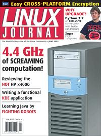

Shutdown Archive web server
Search:
Linux Journal
Issue #98/June 2002

Features
Kode KDE Kindly, Kan You?
by Jason Mott
Help Linux conquer the desktop with your own KDE app.
Emacs: the Free Software IDE
by Charles Curley
Not just for text editing—Emacs is the IDE that's been there all along.
Mediator/Python
by Doug Farrell
Sure it's no system for a basis of government, but Python can help build smart dialog boxes.
Interview
Python 2.2 Q&A with Guido van Rossum, Creator of Python
by Wesley J. Chun
No full monty, just Guido's honest opinions.
Indepth
The OSCAR Revolution
by Richard Ferri
Making clusters easy to build for the nonprogrammer.
Toolbox
Kernel Korner
A NATural Progression
by David A. Bandel
At the Forge
Zope Page Templates
by Reuven M. Lerner
Cooking with Linux
Programming Life!
by Marcel Gagné
Paranoid Penguin
BestCrypt: Cross-Platform Filesystem Encryption
by Mick Bauer
GFX Silicon Grail RAYZ
by Robin Rowe
Columns
Focus on Software
Striking a Nerve
by David A. Bandel
Focus on Embedded Systems
Embedded Systems Conference 2002
by Rick Lehrbaum
Geek Law
Bad Law
by Lawrence Rosen
Linux for Suits
Identity from the Inside Out
by Doc Searls
Reviews
Hewlett-Packard x4000 Workstation
by Thad Beier
Departments
Letters
upFRONT
From the Editor
From the Editor
by Richard Vernon
Best of Technical Support
New Products
Archive Index
Shutdown Archive web server
Search:
Copyright © 1994 - 2018
Linux Journal
. All rights reserved.